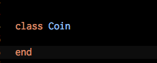
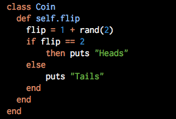
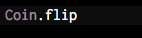

- The first thing we want to do is define the class like in the picture below. Typically, we would define a method called intialize, but because our coin is not complex, we don't need to. This method defines the parameters of the class. You can also implement an error message using ArgumentError if someone tries to use the coin incorrectly. 
- Next we will define a method that flips the coin. We can do that using the following code: 
- Finally, we can call(in other words command) the method using the following code: 
How To Create A Class in Ruby
December 18, 2015
What is a class? The simple version; A class is basically a category of objects. In code, we use objects to get information, perform tasks, and so many other things. When we define a class, we are basically setting the rules for certain types of objects. We can control what types of information the object stores and what types of tasks it can perform.
Let's try it! Today we will define a class called "coin". Simple enough... A coin has 2 sides, heads or tails, and it randomly outputs one or the other when flipped.
And that's it! Once we run the program, it should print "Heads" or "Tails". This is a very simplified version of how to create a class in Ruby, but there are tons of resources online that will help you develop more complex classes. Then, the real fun begins...